Cajamarca
Cajamarca, fundada como «San Antonio de Cajamarca», es la ciudad más importante de la sierra norte del Perú, capital de la provincia y del departamento de Cajamarca. Está situada a 2750 msnm en la margen este de la cadena oriental de la Cordillera de los Andes, en el valle interandino que forman los ríos Mashcon y Chonta. Es una ciudad en constante crecimiento poblacional, con la posibilidad de crear en el futuro un área metropolitana conformada por las ciudades de Cajamarca y Baños del Inca y la anexión de algunos pueblos y villas próximas al casco urbano. La zona de Cajamarca ya había sido habitada en el pasado durante el imperio inca, donde ya se consideraba como un centro poblado importante. En 1532, se produjo en este lugar la captura del inca Atahualpa durante la conquista del Perú. En la época de la colonia mantuvo su categoría de villa hasta el 19 de diciembre de 1802, poco antes de la independencia cuando empezó a ser considerada ciudad y recibió su escudo de armas. Es conocida por su celebración del carnaval, así como su importante producción de lácteos. También es conocida como la Flor del Cumbe, por su cercanía al cerro y al complejo arqueológico de Cumbemayo, la ciudad está ubicada en el extremo oeste del valle homónimo.Según el Instituto Nacional de Estadística e Informática, Cajamarca es la decimotercera ciudad más poblada del Perú y albergaba en el 2014 una población de 228 775 habitantes.
lugares que puedes visitar
Planza de Armas

Igelsia San Francisco
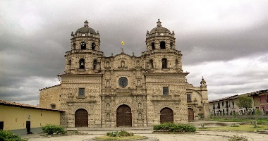Cuarto de Rescate
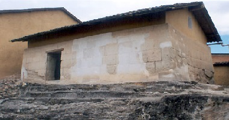Santa Apolonia
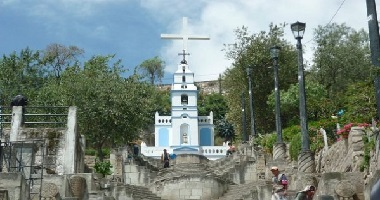Baños del Inca
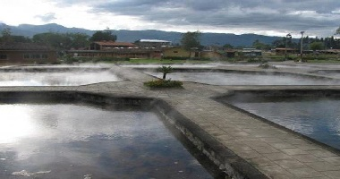Granja Porcon
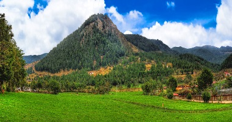Bambamarca
El Distrito de Bambamarca es uno de los tres que conforman la Provincia de Hualgayoc, del departamento de Cajamarca, bajo la administración del Gobierno Regional de Cajamarca. Fue llamado Mambamarca y Pampamarca. Luego Pencapampa y San Carlos de Pencaspampa. Por orden de Pizarro, el 5 de marzo de 1 535 paso a ser posesión y dominio del Adelantado Mayor Melchor Verdugo. Fue parcialidad que obedecía a los Caciques Huaygus, Carvarrica y Tantayali. El primer español que llegó a Bambamarca fue el capitán Gabriel Vásquez. La fundación española de la ciudad de Bambamarca fue obra del obispo de Trujillo, BALTAZAR JAIME MARTÍNEZ DE COMPAÑÓN Y BUJANDA, el 28 de octubre de 1 783. Este obispo, en su recorrido fundó 20 pueblos y mando hacer 1 411 dibujos en acuarela agrupados en 4 tomos acerca de la historia, geografía y costumbres de los pueblos que visitaba. Así por ejemplo, existen referencias sobre las minas de Hualgayoc y el nuevo pueblo de Bambamarca. La colección artística del Obispo Martínez de Compañón se encuentra en Bogotá (Colombia), en el Perú sólo existen fragmentos. Bambamarca fue establecida como Villa en la época de la independencia. En 1 828 se le conoce con el nombre de VILLA DE SAN CARLOS DE BAMBAMARCA. Creada como Distrito por Ley 12191 del 02 de enero de 1 857, perteneciendo a la provincia de Chota. El 24 de agosto de 1 870 pasó a formar parte de la nueva Provincia de Hualgayoc. El 15 de noviembre de 1 906, durante el gobierno de José Pardo y Barrera, por Ley 324, se elevó a la categoría de ciudad. En este período, Bambamarca enfrentó movimientos sociales de diversa índole como la invasión del chileno Carvallo (1 882), la insurgencia de Benel (1 924 – 1 927), la revolución de Jiménez (11-3-33) y algunas querellas políticas sin mayor importancia. Por Decreto Ley Nº 11297 del 10 de marzo de 1 950, Bambamarca se constituye en capital de la Provincia de Hualgayoc, categoría que ostenta hasta hoy.
lugares que puedes visitar
Planza de Armas
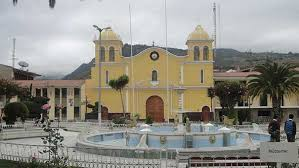Ventanillas de Maraypampa
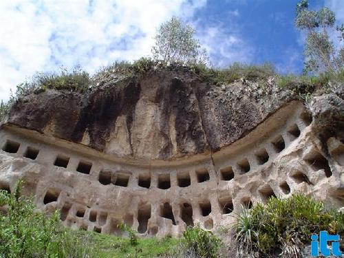Bosque de piedras
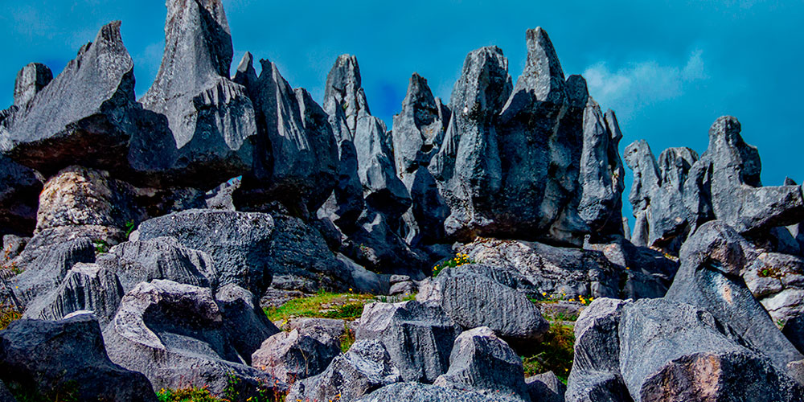Capilla de Chulipampa
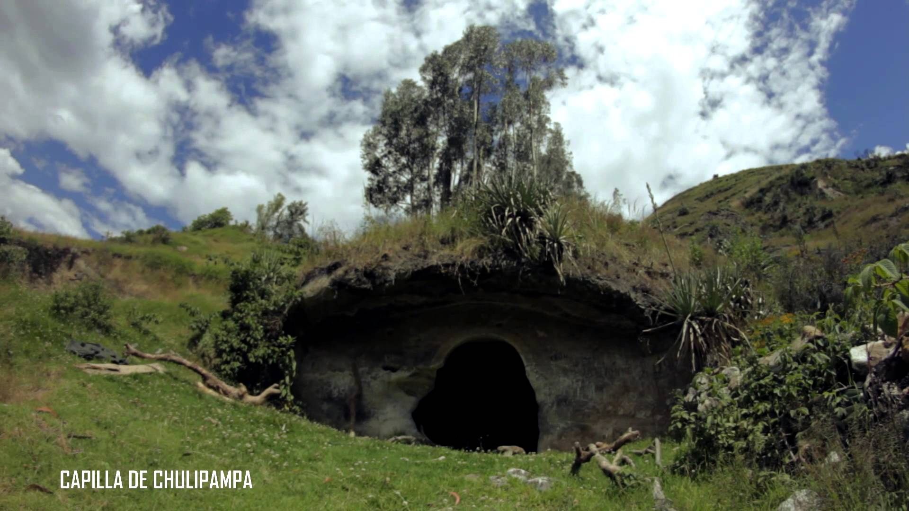Celendin
La provincia se encuentra en la cordillera occidental, flanco oriental de los Andes, al norte del Perú. La historia moderna de Celendín empieza con la fundación política de la ciudad, el 19 de diciembre de 1802, gracias a los esfuerzos previos del obispo de Trujillo Baltazar Jaime Martínez de Compañón y Bujanda, quien empujó el proceso de compra de una hacienda por sus arrendatarios formados por Familias Españolas y Portuguesas, lo que culminó con el surgimiento de la actual población en una hermosa planicie al nororiente de Cajamarca. La ciudad fue levantada sobre un trazado "a cordel" del ingeniero José Comesana, quien planificó calles rectas y manzanas de 80 varas por lado, lo que dio como resultado una ciudad hermosa y serena, de calles impecablemente regulares; tanto así, que Celendín ha sido tantas veces comparada con el famoso damero o tablero de ajedrez. Es un misterio el origen de muchos de los fundadores del pueblo. Por los apellidos y rasgos culturales, se sabe que en muchos casos se trataba de descendientes de familias Galaico-Portuguesas, tal vez de raíz judía o judío conversa. Durante la época colonial, desde fines del siglo XVII y a lo largo del siglo XVIII, muchos judíos sefarditas que habían sido expulsados de España y Portugal pasaron a América, ya sea por su cuenta o por cuenta de Holanda, que tenía planes de colonización en América del Sur e intentaba apoderarse de Brasil, empresa que fracasó. Muchos Holandeses se quedarón en estas tierras mestizándose con los judíos e indígenas de la zona. Según antiguas historias y tradiciones familiares en torno a los orígenes étnicos y culturales de Celendín, un grupo de judíos portugueses llegó hasta la zona en el siglo XVIII, se enamoró de la región y decidió quedarse
lugares que puedes visitar
Planza de Armas
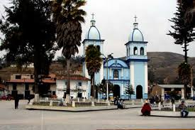Parque Sombrero
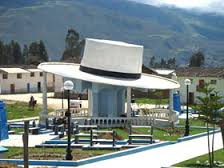Cristo Redentor
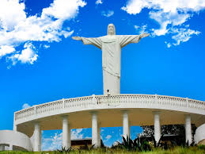Llanguat
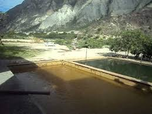Cajabamba
La Provincia de Cajabamba es una de las trece que conforman el Departamento de Cajamarca, bajo la administación del Gobierno Regional de Cajamarca, en el Perú. Limita al norte con la provincia de San Marcos, al este y al sur con la Región La Libertad y al oeste con la provincia de Cajamarca. En 1553 los frailes ermitaños de San Agustín llegaron a Cajabamba con el fin de evangelizar los dominios españoles. Estos erigen una capilla misional en la zona donde ahora es el cementerio Santa Ana, cerca de la famosa “Peña del Olvido”. Esta capilla lleva el nombre de San Nicolás de Tolentino, santo de la devoción de los Agustinos. Durante el gobierno del Virrey Francisco de Toledo ordenó que los pequeños ayllus dispersados alrededor de Cajabamba habitaran en el pueblo de San Nicolás de Tolentino de Cajabamba. El poblado de Cajabamba fue destinado como capital de doctrina y no de provincia, por ese motivo fue trazado con calles rectas y angostas y su Plaza Mayor pequeña. Con el transcurso de los años los hacendados españoles fueron ocupando paulatinamente el pueblo de Cajabamba y se fueron casando con las hijas de los Curacas Lluchos y Mitmas. Terminado la época de la colonia, el pueblo de Cajabamba se había despoblado de indios y en su lugar se había llenado de españoles, criollos y mestizos. l 12 de noviembre de 1827, el general La Mar da una ley elevando a Cajabamba a la categoría de villa. El 9 de noviembre de 1839 el congreso de Huancayo y emite un Decreto declarando a Cajabamba con el título de “La Siempre Fiel Ciudad de Cajabamba” y elevado a la categoría de ciudad. Estos honores fueron gracias a los importantes servicios prestados a la causa de la Independencia del Perú. E Recién el 1854, Cajabamba decide, mediante comicios populares desligarse de Huamachuco, Tal es así que se constituye en Provincia del nuevo departamento de Cajamarca. Por Decreto Supremo del 11 de febrero de 1855, expedido por el presidente Ramón Castilla, reconoce a Cajabamba como Provincia de Cajamarca. En 1988, por la Ley de Descentralización, Cajabamba pasó a integrar la Región Nor Oriental del Marañón (RENOM), conformada por Cajamarca, Lambayeque y Amazonas. Sin Embargo en 1999 se desintegra esta región